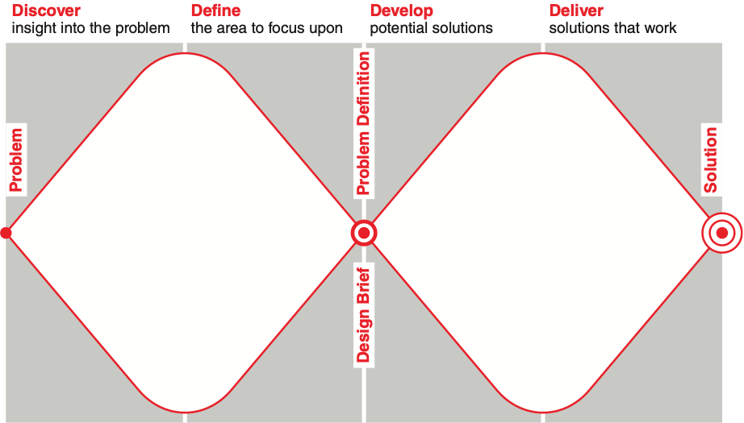

2 Week 2. Data Driven Design
My Project Review feedback> 이 부분은 별도의 레이아웃 사용
- 디자인 프로세스 (더블다이아몬드 모델)에 대한 명확한 이해
- 프로젝트의 목표와 범위에 맞는 해결안 제시
- 프로젝트의 핵심이 뭔지 알기, 의미있는 컨셉이 제시되어야함.
- 디자인 활동의 논리적 연계 필요
- 여러 리서치를 적용했다고 좋은 프로젝트가 아님. 리서치를 통하여 새로운 인사이트 발견이 있어야함.
- 디자인의 핵심이 보이게 PT 구성을 해야함.
2.0.1 Design & Data
Becoming a data-aware designer
- 데이터 기반 UX 디자인 사례
pxd Story :: Data Driven User Modeling - 데이터 기반의 사용자 모델링 프로세스
3 데이터 과학의 방법론을 적용한 데이터 기반 디자인 방법론에 대한 연구
3.0.1 -미세먼지 정보 서비스 앱의 디자인 리서치 사례를 중심으로 -
일부 코드를 첨부할지 생각중, 예제 이미지 추가 예정
- Double Diamond Design Process (by The Design Council)

디자인 프로세스 각 단계에 대한 데이터 과학 관점의 해석과 단계별 주요 디자인 연구 방법 및 데이터 연구 방법의 비교 맵핑(Mapping)

Project Statement : 서울의 미세먼지 현황과 예보를 사용자들의 정보 요구에 맞게 안내해주는 앱 서비스를 디자인한다.
- 사용자 데이터: 서울의 미세먼지 정보가 필요한 사용자
- 사용상황 데이터: 사용자들의 미세먼지 관련 정보 요구가 발생하는 상황
- 서비스 내용 및 가치: 정보 요구를 만족하는 미세먼지 현황과 미세먼지 예보 정보
확보된 공공 데이터
- 서울 25개 측정소의 10년간 미세먼지 현황 (2008-2018년, 10년간의 측정데이터)
- 2018년 서울 25개 구의 시간별 미세먼지 및 기타 오염물질 측정값
- 2018년 서울 중랑구 측정소의 날씨 데이터 (온습도, 풍향)
- 서울 측정소의 주소 정보
- 유사 서비스에 대한 앱스토어의 사용자 평가 데이터 (‘미세미세’와 ‘에어비주얼’ 앱의 사용자 평가 데이터)
프로젝트의 주요 데이터 변수와 미세먼지 대표 앱(미세미세, 에어비주얼)의 앱스토어 평가 데이터 내용
(데이터 수집 기간: 2021.3.1.-2021.5.31.) 이미지 아닌 테이블로 전환

앱 평가 데이터에서 선정한 주요 변수 키워드 > 앱 사용 시점과 빈도, 정보의 설명성, 서비스 신뢰성
유사 앱에서 공통적으로 제공하는 콘텐츠> 지역별, 일별, 시간별 미세먼지 농도 및 나쁨 단계
정보 위젯, 알림, 즐겨찾기 등의 개인화 서비스
서울시 미세먼지 측정 데이터 및 날씨 측정 데이터의 형식 테이블로 전환

사례 데이터의 변수 현황 및 디자인 인사이트

그림 1. 2018년 서울시 미세먼지(적색)와 초미세먼지(청색)량의 측정 평균값 현황:월별/ 시즌별 데이터 패턴을 보여준다. 전체적으로 4월, 12월 주변 구간이 높게 나타나고, 여름에는 미세먼지량이 적게 나타난다. 미세먼지는 계절 차이가 있다. 전체적으로 미세먼지(빨강) 그래프가 위쪽에 자리하고 있고, 변동 폭도 큼을 볼 수 있다. 매우 높은 수치를 보여주는 지점들도 미세먼지 측정량(빨강)이다. 그에 비하여 초미세먼지는 변동이 작고 고르게 발생하고 있다.

그림 2. 2018년 상반기(1-5월) 일별 미세먼지 측정량:미세먼지 시즌의 일별 측정량 변화를 보여준다. (회색 영역은 한국환경공단 기준 ‘미세먼지 나쁨’ 범위)

그림 3. 2018년 4월 6일(년간 미세먼지가 가장 심했던 날)의 시간별, 구별(지역별) 미세먼지 측정 현황:미세먼지 시즌의 시간별 측정량 변화 패턴을 보여준다.(회색 영역은 한국환경공단 기준 ‘미세먼지 나쁨’ 범위)
매우 나쁨 단계의 수치가 특정 시간대(오전 10시경~오후11시경)에 집중되어 있다. 시간별 측정량 차이가 크므로 미세먼지 대표값으로 일평균 값을 쓰면 안된다. 추세선이 표현되므로 시간을 구간으로 나누어 측정량 공지를 할 수 있다. 9)번 질문에 대하여 미세먼지는 일간 변화량이 크다는 것을 확인하였다.
측정소 지역별(구별)로 측정량을 다르지만, 시간별 측정 패턴이 다르지는 않아서 추세선의 흐름이 지역별로 동일하게 유지된다. 매우 나쁨 단계의 범위(회색 영역 위쪽)가 너무 넓고, 같은 단계 안에서 검출량에 큰 차이가 존재한다. 매우 나쁨 단계를 더 나누어 세부 정도를 표기할 필요가 있다.

그림 4.2018년 서울시 지역구별 미세먼지 ‘아주 나쁨’ 기준 이상 값이 측정된 횟수: 지역별 데이터 패턴과 미세먼지 측정 기준의 적정성을 보여준다.
이상의 변수 별, 변수 간 데이터 시각화 실험을 통하여 25건의 미세먼지와 초미세먼지 관련 데이터 패턴을 발견할 수 있었다. 이 단계 분석 작업의 특징은 데이터의 변수 별, 변수 간 시각화를 해보고, 의미 해석을 해보면서, 그 다음에 어떤 시각화를 진행할지를 작업 과정 중에 판단하고, 앞선 분석에서 제기된 질문에 대한 답을 구하면서 단계적으로 진행한다는 것이다. 데이터 분석의 순차적이고, 가변적인 작업 과정은 디자인 리서치의 방법에서도 발견되는 특징이다.
미세먼지 측정 데이터의 변수 현황 및 디자인 인사이트
| 주요 변수관련 데이터의 질문 사항: 신뢰성, 데이터 제공 시점(년,월,일,시간)별 현황, 정보 설명성(요약, 상세(날씨, 지역) | 분석 결과: 변수 별 값의 현황과 변수 간 상관관계 | 데이터 변수 패턴을 반영하는 디자인 인사이트 |
|---|---|---|
| 미세먼지량과 초미세먼지량은 서로 어떤 관계가 있는가. | 대체로 양의 상관관계에 있으나 기준값 이상의 초미세먼지가 기준값 이상의 미세먼지보다 훨씬 자주 발생한다. | 미세먼지와 초미세먼지 데이터 패턴이 다르므로 내용을 따로 표현하고, 각 패턴에 맞는 표현 방법을 사용한다. |
| 년간 미세먼지와 초미세먼지 현황은 어떤 특징을 가지나? | 각 해의 상반기(4월)까지 먼지 발생이 높고, 5-10월까지는 발생량이 낮다가 11월부터 높아진다. 초미세먼지도 같은 패턴을 보이며, 일별 변동이 크다. | 월별 미세먼지 발생 시즌에 따라 다른 표현으로 안내하는 정보 서비스가 필요하다. 발생량이 낮은 기간에는 앱 사용도가 낮을 것이다. |
| 월간 미세먼지와 초미세먼지 현황은 어떤 특징을 가지나? | 월 별 차이가 크다. 초미세먼지도 상반기가 많으나, 월별 먼지량의 차이가 상대적으로 작다. | |
| 가을을 제외한 대부분의 달에서 기준량을 초과한다. | 초미세먼지 정보는 연중 중요도가 지속적으로 높고, 대부분 나쁨 기준량을 초과하여 경각심을 줄 필요가 있다. | |
| 월간 미세면지와 시간별 미세먼지 현황은 어떤 관련성이 있나? | 미세먼지가 적은 달은 시간별 변동이 크지 않으나, 미세먼지량이 많은 달은 시간별 변동량이 크다. | 미세먼지 시즌에는 시간 별 측정량을 강조해야 한다. |
| 미세먼지의 시간별 변화에 어떤 패턴이 있는가? | 미세먼지가 많은 날은 특정 시간 대에 먼지량이 집중되며, 아주 나쁨 수준에 매우 큰 편차가 존재한다. 기준 값보다 3-4배 많은 날도 있다. | 현재의 환경 공단 기준 4단계 경보는 아주 나쁨 단계의 심각성을 반영하지 못한다. 단계 구간의 변경이 필요하다. |
| 초미세먼지의 시간 별 변화에 어떤 패턴이 있는가? | 초미세먼지가 많은 날은 특정 시간대에 먼지량이 집중되나 편차가 적다. | 시간별 측정량을 강조하되, 일별 정보도 의미있게 다룬다. |
| 한국환경공단의 미세먼지 측정 단계는 어떤 의미가 있나? | 4단계로 되어있는데, 시간별 변동이 크므로 하루 측정값의 평균을 사용하는 표준 단계 값은 정확하지 않다. | 정확한 정보 전달을 위해 미세먼지 측정 단계 값을 일별 국내 표준이 아닌 더 |
| 정확한 단계로 제공해야 한다.(기존 앱도 더 상세한 국제 기준을 사용함) | ||
| 미세먼지, 초미세먼지와 날씨는 어떤 관계가 있나? 어떤 날씨 정보가 영향을 주나? | 기온, 습도, 풍속은 크게 관련이 없고, 서, 북향의 풍향이 많은 때에 미세먼지, 초미세먼지 발생 빈도가 높다. 풍향은 계절(달)별 먼지 발생에 영향을 미친다. | 풍향 정보가 미세먼지 발생과 연계되므로, 다른 날씨 정보보다 풍향 정보를 잘 연계하여 표현해야 한다. |
| 지역(측정소)별 미세먼지, 초미세먼지의 분포는 어떠한가? 지역별 차별화 표현이 필요한가? | 서울시의 구별 미세먼지 발생 패턴은 유사하다. 다만 특히 미세먼지 나쁨 단계 이상 빈도가 큰 지역이 존재한다. | 지역별로 표현 방식이 다를 필요는 없다. 그러나 발생 빈도가 높은 지역에 대한 경고 및 지역별 사용자 옵션으로 더 자세한 미세먼지 정보를 제공할 수 있다. |
해설 원고 추가 예정
데이터 변수 패턴 기반의 디자인 컨셉 도출
| 디자인 컨셉 | |||
|---|---|---|---|
| 사용자 데이터 | 질병/ 가족 구성 등 | ||
| 사용자 특징 | 특정 사용자 집단별 서비스 니즈와 상관 없이 서비스를 자주 사용하는 사용자의 필요 반영 | <서비스를 자주 사용하는 사용자> | |
| 서비스를 자주 사용하는(일별 사용 및 수시 사용) 일반 사용자를 타겟으로함. | |||
| 사용 상황 데이터 | 사용 시점과 빈도, 환경(날씨, 지역) | 매일 및 수시 확인 시점 별 정보 니즈 반영 |
환경 정보는 지역 상황에 따라 필요성이 다름 날씨는 풍향만 미세먼지에 영향있음. | <매일 확인> 일별 통합 예측시 시간대별 예측 정보 제공 <수시 확인> 측정 시점(시간별) 정보, 1-3시간 후 추이 정보 강조 사용자 선택 옵션으로 지역별 날씨, 미세먼지 상세 정보 제공 | | 서비스 내용 데이터 (서비스 가치) | 정보의신뢰성/ 정확성 확보 | 년간 시즌/월별/일별/ 시간별 발생 패턴이 다름 | <미세먼지 시즌 별 정보 표현 차별화> 미세먼지 집중 기간 (11월-5월)과 그 외 기간의 정보 표현 차별화 여름 및 가을(6-10월)에는 미세먼지 정보 외 부가 생활 정보 제공 시간별 측정량 중심의 정보 표현 | | | 정보 설명성 (요약, 상세 설명) | 미세/초미세 먼지의 데이터 특징이 다름 일별 요약은 대표값으로 부적절함 미세먼지의 경우 아주 나쁨 단계 범위가 너무 넓음 | <요약 설명> 미세, 초미세먼지의 표현 방법 차별화 미세 먼지의 아주 나쁨 단계 세분화 (초미세먼지는 그대로 사용) 아주 나쁨 단계의 경각심 표현 강화 <상세 설명> 시간별 정보 중심으로 설명 사용자 옵션으로 사용자 요구에 따른 상세 설명 방법, 알림 방법 제공 | | | 관심 부가 서비스 | 알림, 위젯 등에서 요약 정보 요구 | <정보 상황에 의한 알림/위젯 디자인> 나쁨 빈도 높은 지역에는 알림 방법 강화 시간별 알림 및 관심 지역 중심의 알림, 위젯 디자인 제공 |
사례연구를 통한 Data Driven Design 방법의 장점
적은 노력으로 다량, 장기간의 자료를 수집 분석 가능 —> 디자인 생산성 증대
사용자 연구 방법론으로 도출할 수 없는 디자인 컨셉 도출 (정보 신뢰성, 정확성, 설명성)
사용자 관련 데이터로 변수 추출 —> 변수 내용과 패턴은 센싱 데이터로 추출
대규모 프로젝트, 협업 연구 용이
컨셉 도출 이후 디자인 전개 방법
도출된 컨셉을 활용하여 디자인 변수와 값의 평가 목표 설정
(AI를 활용하여) 디자인 모델 설정
(AI 추론에 의한) 디자인 개발
A/B 테스팅 등 평가 도구를 사용한 검증
데이터 큐레이션 방법론 연구 필요
디자이너의 데이터 문해력 필요
다음주 준비>
- 린 스타트업 실전 UX ch0. (p21-35) 읽어오기
- StudentLife data, data set study
- 국내 데이터 서비스 검색 및 활용 가능성 조사
프로젝트 조구성 3인 1조 기본
프로젝트에서 관심 데이터 및 분석 결과 선정 —> 데이터 인사이트 —> 관심 서비스 도출 (3-4가지 서비스)
제안하는 내용의 논리구조가 설득력 있어야함.
이상의 과정을 정리하여 2-3페이지의 pdf 파일 제출 (조별로 1명만 제출하면 됩니다.)